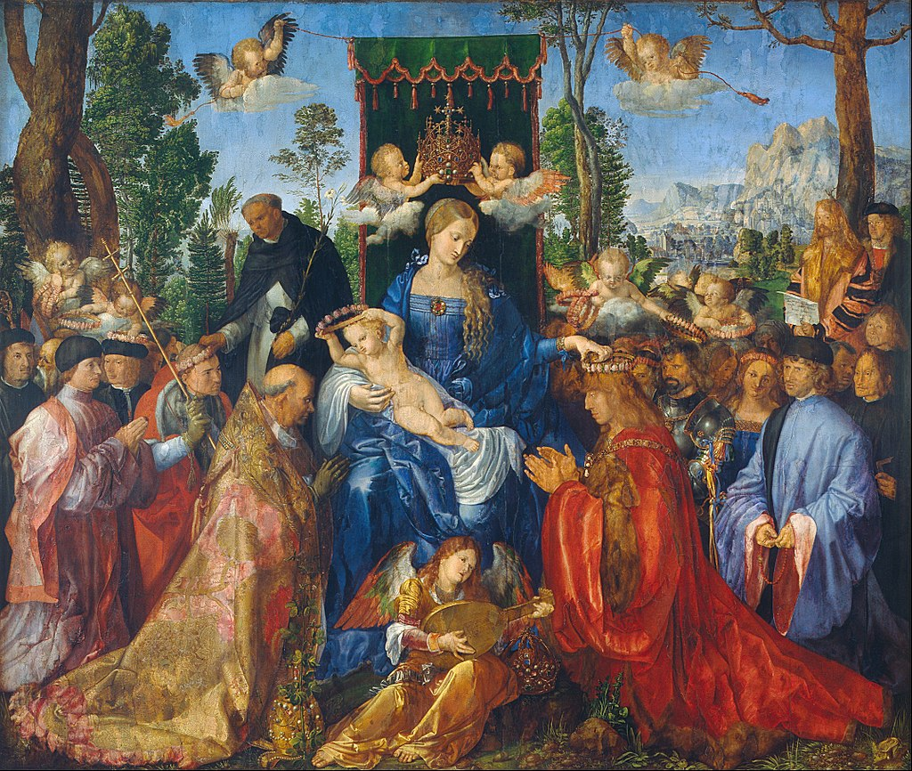

<head>
<meta charset="UTF-8" />
<meta name="keywords" content="drawing, painting" />
<meta name="description" content="drawings by Sunjy" />
<title>Sunjy</title>
<link rel="shortcut icon" type="image/x-icon" href="../../mImages/mCommon/favicon.ico" media="screen" />
<link rel="stylesheet" type="text/css" href="../../mCsses/mCommon/mCssA.css" />
<link rel="stylesheet" type="text/css" href="../../mCsses/mCommon/mCssB.css" />
<link rel="stylesheet" type="text/css" href="../../mCsses/mCommon/mCssC.css" />
<link rel="stylesheet" type="text/css" href="../../mCsses/mCommon/mCssD.css" />
<link rel="stylesheet" type="text/css" href="../../mCsses/mContent/mCssA.css" />
<link rel="stylesheet" type="text/css" href="../../mCsses/mContent/mCssB.css" />
<link rel="stylesheet" type="text/css" href="../../mCsses/mContent/mCssC.css" />
<link rel="stylesheet" type="text/css" href="../../mCsses/mContent/mCssD.css" />
</head>
<script type="text/javascript" src="../../mScripts/mContent/mContentAA.js" /></script>
<script type="text/javascript" src="../../mScripts/mContent/mContentAB.js" /></script>
<script type="text/javascript" src="../../mScripts/mContent/mContentAC.js" /></script>
<script type="text/javascript" src="../../mScripts/mContent/mContentAD.js" /></script>
<script type="text/javascript"></script> 
<script type="text/javascript">
document.write('<div class="mImgAbsolute"></div>');
/*
document.write('<p class="mFontSizeBColor" />From a white paper...</p>');
document.write('<table class="center"><tr><td>');
document.write('');
document.write('</td></tr></table>');
*/
</script>


<script type="text/javascript">
document.write('<p class="mFontSizeBColor" />Feast of the Rosary</p>');
document.write('<p class="mFontSizeSColor" />“Feast of the Rosary” by Albrecht Dürer shows the Virgin Enthroned holding the Child. Above her head are two flying angels holding an elaborate royal crown made of gold, pearls, and gems.<br><br>The throne’s backrest is covered with a green drape and by a ceremonial fabric over the throne, which is held by two flying cherubs. At the Virgin’s feet is an angel playing the lute.<br><br>Mary is in the act of distributing rose garlands to kneeling worshippers, lined up in rows at the sides. This composition motif was a Flemish scheme that had become widespread in Germany at the time.<br><br>On the left of the throne, is Pope Julius II. He is being crowned by the Child and is being followed by a procession of religious figures.<br><br>On the right of the throne is the German emperor Frederick III, being crowned by Mary and followed by a lay procession. The pope and the emperor were the supreme authorities of the Catholic world.<br><br>However, they are shown having laid the papal tiara and the imperial crown on the ground next to the angel and were kneeling to receive Madonna’s blessing.<br><br>Angels on either side of the throne are helping to distribute the crowns of flowers as is St. Dominic of Guzman, who stands next to the Chris Child.<br><br>On the right, nearby a lush Alpine landscape and just in front of the tree, is the Albrecht Dürer in a self-portrait. The artist is looking directly at the viewer with a document in his hands.<br><br>The paper has his signature with an inscription, reporting the time needed to complete the work as five months.<br><br>This work dates to Dürer’s visit to Venice. The subject of the “Feast of the Rosary” was a theme connected to the worship by German citizens in Venice, towards Our Lady of the Rosary.<br><br>It was is a feast day of the Roman Catholic Church, which celebrated the anniversary of the decisive victory of the combined fleet of the Holy League of 1571 over the Ottoman navy at the Battle of Lepanto.<br></p>');
document.write('<table class="center" /><tr><td>');
document.write('<br>The throne’s backrest is covered with a green drape and by a ceremonial fabric over the throne, which is held by two flying cherubs. At the Virgin’s feet is an angel playing the lute.<br><br>Mary is in the act of distributing rose garlands to kneeling worshippers, lined up in rows at the sides. This composition motif was a Flemish scheme that had become widespread in Germany at the time.<br><br>On the left of the throne, is Pope Julius II. He is being crowned by the Child and is being followed by a procession of religious figures.<br><br>On the right of the throne is the German emperor Frederick III, being crowned by Mary and followed by a lay procession. The pope and the emperor were the supreme authorities of the Catholic world.<br><br>However, they are shown having laid the papal tiara and the imperial crown on the ground next to the angel and were kneeling to receive Madonna’s blessing.<br><br>Angels on either side of the throne are helping to distribute the crowns of flowers as is St. Dominic of Guzman, who stands next to the Chris Child.<br><br>On the right, nearby a lush Alpine landscape and just in front of the tree, is the Albrecht Dürer in a self-portrait. The artist is looking directly at the viewer with a document in his hands.<br><br>The paper has his signature with an inscription, reporting the time needed to complete the work as five months.<br><br>This work dates to Dürer’s visit to Venice. The subject of the “Feast of the Rosary” was a theme connected to the worship by German citizens in Venice, towards Our Lady of the Rosary.<br><br>It was is a feast day of the Roman Catholic Church, which celebrated the anniversary of the decisive victory of the combined fleet of the Holy League of 1571 over the Ottoman navy at the Battle of Lepanto.<br>" />');
document.write('</td></tr></table>');
</script>


